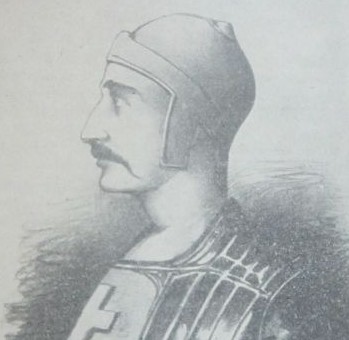

După pierderea independenței în favoarea Regatului Ungariei și Imperiului Otoman, Serbia și-a redobândit vremelnic suveranitatea în timpul lui Iovan Nenada în secolul al 16-lea.Trei invazii habsburgice și numeroase rebeliuni au pus multe probleme autorității otomane.Un eveniment celebru a fost revolta din Banat din 1595,în contextul Războiului celui Lung dintre otomani și habsburgi.Zona Vojvodinei moderne a fost ocupată de otomani un secol înainte de a fi cedată Imperiului Habsburgic la sfârșitul secolului al XVII-lea, în baza Tratatului de la Karlowitz. În toate ținuturile sârbești de la sud de Dunăre și Sava, nobilimea a fost eliminată,iar țărănimea a fost devenit iobagă în slujba stăpânilor otomani, în vreme ce o mare parte din clerici au fugit ori s-au ascuns în mănăstiri izolate.În sistemul otoman,sârbii,în calitate de creștini,erau considerați o clasă inferioară de oameni și supuși unor biruri grele, iar o mică parte din populația sârbă a cunoscut islamizarea.
Otomanii au desființat Patriarhia Sârbă de Peć (1463), dar au reînființat-o în 1557, oferind o continuare limitată a tradițiilor culturale sârbești în cadrul imperiului. 
Pe măsură ce marile migrații sârbești au depopulat cea mai mare parte a sudului Serbiei,sârbii au căutat refugiu peste Dunăre în nord în Voivodina și la Frontiera Militară din vest,unde coroana austriacă le-a acordat drepturi prin decizii cum ar fi Statuta Wallachorum din 1630(Decret sau Ordin emis de imparatul Ferdinand al 2-lea care definea drepturile "vlahilor" sau unor comunitati de refugiati).Centrul ecleziastic al sârbilor s-a mutat spre nord, la Mitropolia Sremski Karlovci,în timp ce Patriarhia Sârbă din Peć a fost din nou desființată de otomani în 1766.În urma mai multor petiții,Sfântul Împărat Roman Leopold I a acordat oficial sârbilor care voiau să plece dreptul la un ținut autonom în cadrul Coroanei Habsburgice. În 1718-39, monarhia habsburgică a ocupat Serbia centrală și a înființat „Regatul Serbiei”.În afară de Voivodina și nordul Belgradului, care au fost absorbite în Imperiul Habsburgic,Serbia Centrală a fost ocupată din nou de Habsburgi și în 1686-91 și în 1788-92.